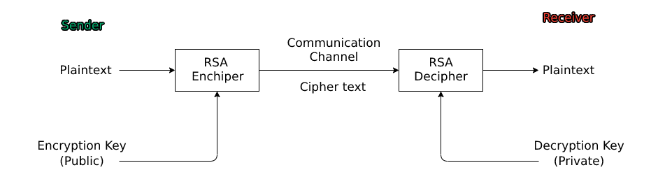

RSA or Rivest-Shamir-Adleman is a public-key cryptosystem that has been used around the world as a security mechanism to enhance the security of data via transmission. It was created by of Ron Rivest, Adi Shamir and Leonard Adleman and the algorithm was brought to light in 1977. Because this is an asymmetric cryptosystem the public key is different from the private decryption key. The public key in RSA is generated from two really large prime numbers which are kept hidden from involving parties. The system is defunct if the prime numbers are acquired by an individual as the encryption and decryption can easily be reversed. The genius behind the system is that it is basically impossible to reverse the math involved with the prime numbers as such is called the ”factoring problem”. Currently there are not methods to break through RSA encryption.

Key Generation:
1.) We have two grab to large primes (random)
For learning convinience we will choose p and q from 11-100.
2.) We now compute N (modulus) using n=pq
3.) Compute Φ(n) = (p-1)(q-1), labeled as L in our case.
4.) Choose an integer e (public exponent), 1 < e < ϕ, such that gcd(e,ϕ)=1.
For learning convinience we will choose the first available.
5.) Compute the d (secret exponent), 1 < d < ϕ, such that ed≡1modϕ.
In effect:
Note: When encrypting and decrypting we have to assign the characters to
a number to compute the math. In this case we have converted them to ASCII.
1.) Encrypted Data c = 89^e mod n.
2.) Decrypted Data = c^d mod n.